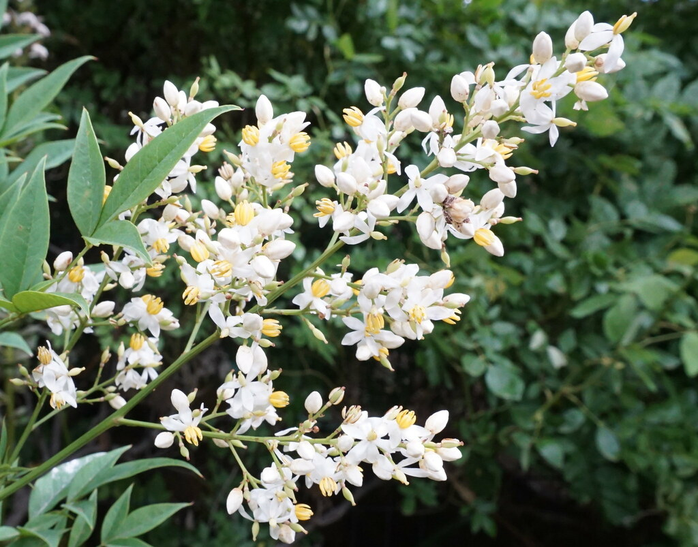
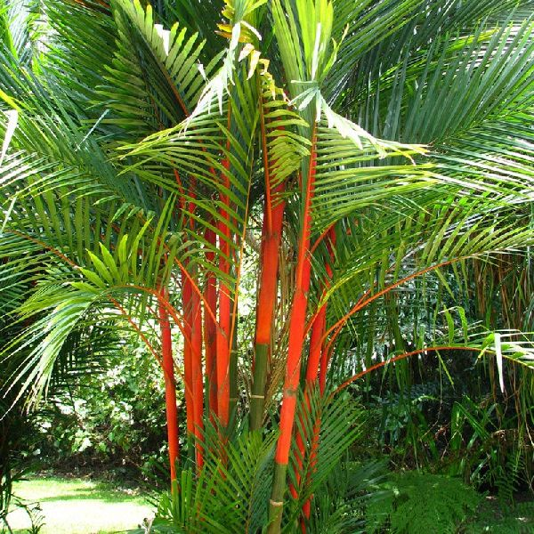
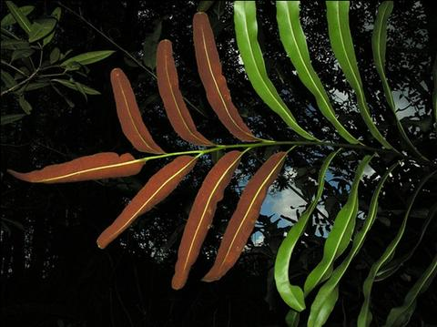
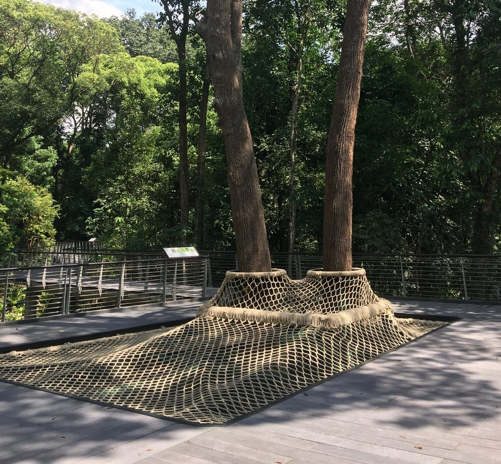
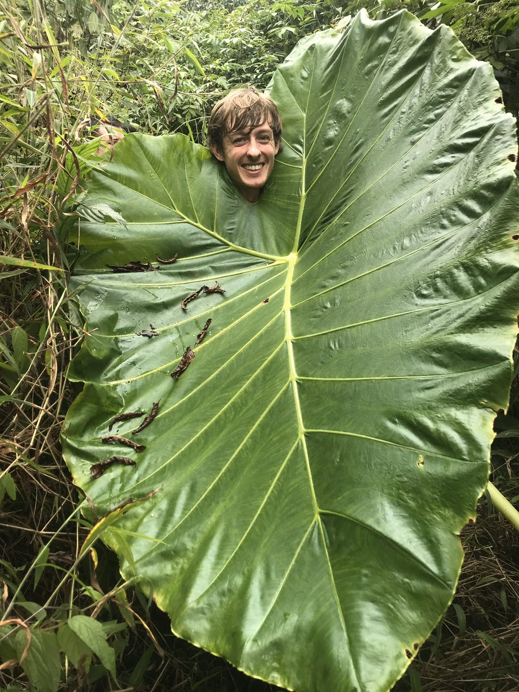
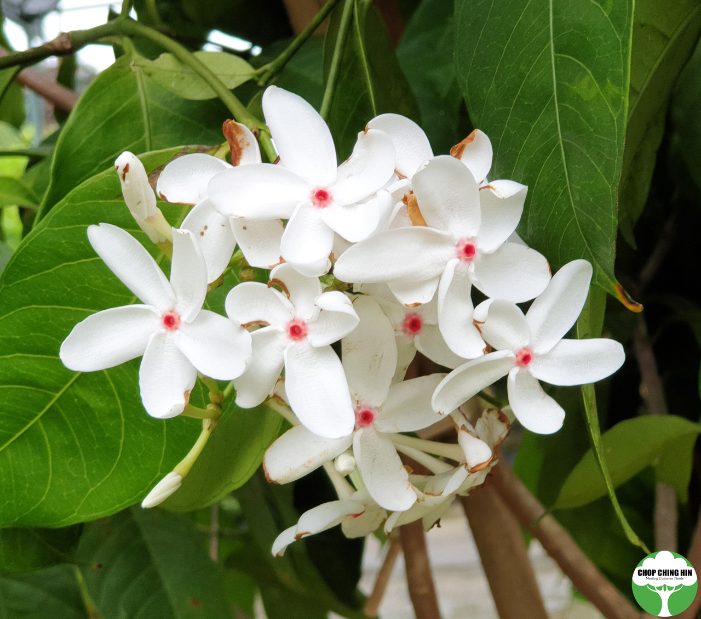

Bamboo flowers are rarely seen
The Bambusetum features over 30 species of tropical bamboos,
showcasing the wide diversity of growth forms that occur naturally in the wild.
Bamboos are part of the grass family (Poaceae), which are monocots.
This also mean that their leaves show a parallel venation, typical of most monocots like grasses.
Cool Fact: Although bamboos do flower, most bamboos only do so at the end of their lifetimes,
which may take up to 120 years!

The lipstick palm has red lipstick-like colour
Palms, also monocots, are commonly found in tropical regions.
The lipstick palm, especially, has its existence in Singapore dating back to colonial times,
with its unique red lipstick-like look featured in historical European paintings.
Many types of palm can be found in the Learning Forest, including the oil palm, sago palm,
fishtail palm and the lipstick palm. Palm trees provide humans useful resources like oil,
food (dates, sago, attap seeds, coconut), rattan material...
Cool Fact: The lipstick palm is used as the logo of the Singapore Botanic Gardens!

Acrostichum aureus leaves only have 1 sorus each
Ferns are seedless plants that reproduce by spores instead.
Spores are smaller, unfertilised, and have less nutrients than seeds.
Spores are found in sori clusters, normally with each leaf having a few sori .
Prefering humid and wet habitats, ferns are also common in the tropics.
The Learning Forest features many different types of ferns, with more interesting ones like Acrostichum aureum.
Cool Fact: Acrostichum aureum which can be found at the freshwater swamp, has only 1 sorus per leaf spread across the entire leaf frond.

The Canopy Web built upon hardy tembusu
Tembusu trees, native to Southeast Asia, are very common in The Learning Forest.
They can be easily identified by their deeply fissured barks and dark brown trunks, and can grow up to 40m tall.
Tembusu trees have very durable wood, resistant to termite attack.
Hence, they are often used for heavy construction, bridges and carving.
In fact, there is a Canopy Web play area in the Learning Forest, built upon tembusu trees!
Cool Fact: The tembusu tree at the back of Singapore's $5 note can be found in the Singapore Botanic Garden!

Leaves of Xanthosoma sagittifolium are huge
Several plants from the Aracaae family can be found in the Learning Forest.
Plants from this family are called Aroids.
Aroids have unique arrow-shaped leaves, and finger-like flower clusters , called a spadix.
Aroids come in all shapes and sizes. The yam we normally eat and money plant we grow are also aroids!
Cool Fact: Xanthosoma sagittifolium, also known as the arrowleaf elephant ear,
is a large aroid easily spotted in this forest. It's so big, it's leaves may even envelope children!

Kopsia singapurensis flowers are in Singapore colours
A prominent shrub of the native, critically endangered Kopsia singapurensis plant
can be seen after turning right from the Nassim Gate entrance.
Kopsia singapurensis is not only native to Singapore, but the flowers also
in the colours of Singapore's flag: Red and White.
This is another reason why the plant's species name, singapurensis , is named after Singapore!
Cool Fact: In Singapore, there's only 1 Kopsia singapurensis plant left in the wild.
The tree can be found at the Nee Soon Freshwater Swamp.